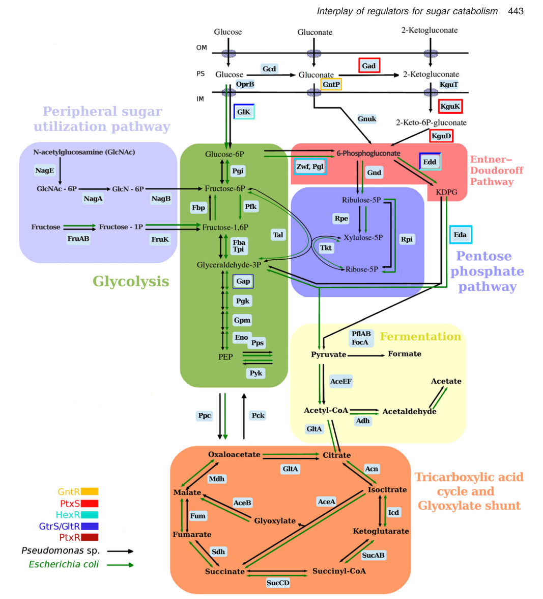

6-phosphogluconolactonase (6PGL; EC 3.1.1.31) is a cytoplasmic hydrolase that catalyzes the hydrolysis of 6-phospho-D-glucono-1,5-lactone to 6-phospho-D-gluconate. This reaction is the second step of the oxidative branch of glucose-6-phosphate catabolism, following the glucose-6-phosphate dehydrogenase (Zwf) reaction. The 6-phosphogluconate product is the central branch-point metabolite that feeds both the Entner-Doudoroff pathway and the pentose phosphate pathway. In Pseudomonas putida KT2440 the gene (PP_1023) is part of a conserved zwf-pgl-eda operon dedicated to upper glucose catabolism. The protein belongs to the glucosamine/galactosamine-6-phosphate isomerase family, 6-phosphogluconolactonase subfamily.
| GO Term | Evidence | Action | Reason |
|---|---|---|---|
|
GO:0005975
carbohydrate metabolic process
|
IEA
GO_REF:0000120 |
MARK AS OVER ANNOTATED |
Summary: General carbohydrate metabolic process term; correct but superseded by the more specific pentose-phosphate shunt annotation.
Reason: This is a high-level grouping term. It is not incorrect, but the more specific child term GO:0006098 (pentose-phosphate shunt) is also annotated and better captures the precise biological process for 6-phosphogluconolactonase. Retain as non-core/over-annotated background.
|
|
GO:0006098
pentose-phosphate shunt
|
IEA
GO_REF:0000120 |
ACCEPT |
Summary: 6-phosphogluconolactonase catalyzes step 2 of the oxidative stage of the pentose phosphate pathway (D-ribulose 5-phosphate from D-glucose 6-phosphate), consistent with UniPathway UPA00115 and the enzyme's established role.
Reason: Well-supported by enzyme function and pathway membership (UniPathway UER00409, oxidative PPP step 2/3). This is a core biological process for the gene. Note that in P. putida the 6-phosphogluconate product predominantly feeds the Entner-Doudoroff pathway, but the PPP oxidative-stage annotation accurately reflects the enzymatic step.
|
|
GO:0017057
6-phosphogluconolactonase activity
|
IEA
GO_REF:0000120 |
ACCEPT |
Summary: Catalyzes hydrolysis of 6-phospho-D-glucono-1,5-lactone to 6-phospho-D-gluconate (EC 3.1.1.31; RHEA:12556). This is the precise, defining molecular function of the gene product.
Reason: Core molecular function. Supported by UniRule/ARBA annotation, RHEA reaction mapping, EC 3.1.1.31, and family/domain assignment (TIGR01198 pgl; PANTHER PTHR11054; CDD cd01400 6PGL). The protein is a clear member of the 6-phosphogluconolactonase subfamily.
|
This report is retrieval-only and is generated directly from Asta results.
search_papers_by_relevance with snippet_search.The research report should be a detailed narrative explaining the function, biological processes, and localization of the gene product. Citations should be given for all claims.
You should prioritize authoritative reviews and primary scientific literature when conducting research. You can supplement
this with annotations you find in gene/protein databases, but these can be outdated or inaccurate.
We are specifically interested in the primary function of the gene - for enzymes, what reaction is catalyzed, and what is the substrate specificity? For transporters, what is the substrate? For structural proteins or adapters, what is the broader structural role? For signaling molecules, what is the role in the pathway.
We are interested in where in or outside the cell the gene product carries out its function.
We are also interested in the signaling or biochemical pathways in which the gene functions. We are less interested in broad pleiotropic effects, except where these elucidate the precise role.
Include evidence where possible. We are interested in both experimental evidence as well as inference from structure, evolution, or bioinformatic analysis. Precise studies should be prioritized over high-throughput, where available.
The UniProt target Q88P30 corresponds to Pseudomonas putida strain KT2440 locus PP_1023, gene pgl, annotated as 6-phosphogluconolactonase (6PGL). In P. putida KT2440, pgl is genomically and transcriptionally linked to zwfA and eda in a conserved zwfA–pgl–eda operon, placing it unambiguously in upper glucose catabolism (oxidative PPP / ED entry) rather than any unrelated “pgl” symbol used in other organisms (volke2021cofactorspecificityof pages 9-11, udaondo2018regulationofcarbohydrate pages 5-6).
6-Phosphogluconolactonase (Pgl; EC 3.1.1.31) catalyzes hydrolysis of the cyclic ester 6-phosphoglucono-δ-lactone (6PGLac) to 6-phosphogluconate (6PG; also written 6P-Gluc). In the canonical cytosolic phosphorylative route, Zwf (glucose-6-phosphate dehydrogenase) converts glucose-6-phosphate (G6P) to 6-phosphogluconolactone, and Pgl performs the subsequent lactonase step to yield 6PG, which is the branch-point metabolite feeding the Entner–Doudoroff (ED) pathway and pentose phosphate pathway (PPP) (chen2024gnurrepressesthe pages 1-3, udaondo2018regulationofcarbohydrate pages 5-6).
A defining feature of glucose assimilation in Pseudomonas (including KT2440) is that glucose can be converted to 6PG via multiple routes, yielding a “three-pronged” system converging on the 6PG node (udaondo2018regulationofcarbohydrate pages 1-5). One major route involves periplasmic oxidation of glucose to gluconate/2-ketogluconate and subsequent cytosolic steps; another involves cytosolic uptake and phosphorylation to G6P followed by Zwf + Pgl to reach 6PG (udaondo2018regulationofcarbohydrate pages 5-6, udaondo2018regulationofcarbohydrate pages 1-5). The 6PG node then links ED, PPP, and broader central metabolism (chen2024gnurrepressesthe pages 1-3).
In KT2440, pgl is co-transcribed with zwfA and eda (zwfA–pgl–eda operon). This arrangement couples the first oxidative step (Zwf), the lactone hydrolysis step (Pgl), and the downstream ED cleavage step (Eda), consistent with coordinated control of upper glucose catabolism (volke2021cofactorspecificityof pages 9-11, udaondo2018regulationofcarbohydrate pages 5-6). The operon organization and its role in glucose metabolism are schematized in the Udaondo et al. review figures (udaondo2018regulationofcarbohydrate media 6481cb1b, udaondo2018regulationofcarbohydrate media 52940a6c).
Evidence available in this run provides quantitative context at/around the 6PG branch point (rather than purified Pgl kinetics in KT2440):
These quantitative constraints are important for interpreting the physiological impact of pgl: even if the Zwf/Pgl route contributes a minority of 6PG flux under some conditions, Pgl is part of a regulated, conserved operon that enables the intracellular phosphorylative entry route and contributes to redox and carbon partitioning (volke2021cofactorspecificityof pages 9-11, nikel2015pseudomonasputidakt2440 pages 7-8).
A widely cited model for KT2440 places the zwf/pgl/eda operon under control of HexR, an RpiR-family transcriptional regulator divergently oriented relative to the operon (udaondo2018regulationofcarbohydrate pages 5-6, udaondo2018regulationofcarbohydrate pages 6-8). HexR binds an operator motif reported as 5′-TTGT–N7/8–ACAA-3′ in target promoters (e.g., zwf), functioning primarily as a repressor; binding of the ED intermediate KDPG (2-keto-3-deoxy-6-phosphogluconate) acts as an effector that triggers derepression (HexR dissociation) and increased transcription of the operon (udaondo2018regulationofcarbohydrate pages 6-8). The operon architecture and HexR-centered network are shown in Udaondo et al. figures (udaondo2018regulationofcarbohydrate media 52940a6c, udaondo2018regulationofcarbohydrate media 5a64ace2).
In KT2440 reporter experiments (from a systems-level study of glucose catabolism), deletion of hexR increased activity from a PzwfA reporter by ~2.5-fold, consistent with HexR-mediated repression of the operon under tested conditions (volke2021cofactorspecificityof pages 9-11).
A 2024 multi-omics and physiology study emphasized that pgl (with zwfA) contributes to conversion of G6P to 6P-Gluc (6PG) and framed 6PG as a central intermediate connecting ED/EMP/PP pathways in KT2440; the authors reported that glucose-catabolic genes and multiple related TF genes were induced by glucose and gluconate and that regulatory differentiation could be probed using a gcd deletion mutant (chen2024gnurrepressesthe pages 1-3). While the extracted sections do not provide pgl-specific fold-changes, the study supports the modern view that glucose and gluconate catabolism in KT2440 is controlled by multiple TFs and is best interpreted as an integrated, multi-route network converging on 6PG (chen2024gnurrepressesthe pages 1-3).
Direct experimental localization of KT2440 Pgl (e.g., fluorescence localization) was not retrieved in this run. However, multiple sources consistently place Pgl function in the cytosolic phosphorylative route: glucose transported into the cytoplasm is phosphorylated by Glk to G6P and then processed by Zwf and Pgl to 6PG (sun2024thefunctionalcharacterization pages 1-3, udaondo2018regulationofcarbohydrate pages 5-6). This provides strong inference that the catalysis occurs in the cytoplasm, in contrast to periplasmic glucose oxidation steps (Gcd/Gad) upstream of alternative 6PG-generating routes (udaondo2018regulationofcarbohydrate pages 5-6, udaondo2018regulationofcarbohydrate pages 1-5).
The 2024 study of KT2440 glucose/gluconate regulation positions zwfA and pgl as key enzymatic steps in producing 6PG and emphasizes the induction of glucose catabolism genes under glucose and gluconate, alongside regulon definition for a glucose/gluconate-associated TF (chen2024gnurrepressesthe pages 1-3, chen2024gnurrepressesthe pages 12-13). This represents a contemporary shift toward multi-omics + physiology approaches for reconstructing condition-specific catabolic regulation.
Two 2024 works in applied contexts underscore that the Zwf/Pgl steps are considered a manipulable entry point for carbon/redox control in Pseudomonas metabolism:
P. putida KT2440 is widely used as a chassis for bioproduction and bioconversion. In such designs, the upper glucose assimilation nodes (including the Zwf/Pgl step producing 6PG) are central because they influence entry into ED/PPP and impact redox cofactor generation (NAD(P)H) and precursor supply. Engineering studies targeting glucose catabolism and its regulators (notably HexR) demonstrate that modulating repression/derepression of the zwf-pgl-eda module is a practical route to adjust metabolic flux (volke2021cofactorspecificityof pages 9-11, udaondo2018regulationofcarbohydrate pages 6-8).
The regulatory architecture reviewed by Udaondo et al. highlights a recurrent design principle in Pseudomonas: transcription factors respond to pathway intermediates (e.g., KDPG) and regulate operons that define route choice and catabolite repression. In that framework, the zwf/pgl/eda module is not only a metabolic unit but also part of a signaling-controlled logic circuit coordinating glucose, gluconate, and related sugar catabolism (udaondo2018regulationofcarbohydrate pages 6-8, udaondo2018regulationofcarbohydrate media 5a64ace2).
Udaondo et al. provide schematics that directly support pgl’s pathway placement and regulation: (i) a glucose metabolism map highlighting Zwf/Pgl/Eda; (ii) the conserved hexR-zwf-pgl-eda genomic arrangement; and (iii) a regulatory network with HexR and the KDPG effector (udaondo2018regulationofcarbohydrate media 6481cb1b, udaondo2018regulationofcarbohydrate media 52940a6c, udaondo2018regulationofcarbohydrate media 5a64ace2).
The following table condenses the evidence-backed functional annotation for quick reference.
| Aspect | Summary |
|---|---|
| identity | Gene/protein verified as the requested target: Pseudomonas putida KT2440 pgl = PP_1023, annotated as 6-phosphogluconolactonase / 6-phosphogluconate lactonase (6PGL) in the zwfA-pgl-eda operon; literature context matches UniProt Q88P30 and not an unrelated pgl gene from another organism/system (volke2021cofactorspecificityof pages 9-11, chen2024gnurrepressesthe pages 1-3, udaondo2018regulationofcarbohydrate pages 5-6) |
| reaction/EC | Catalyzes the lactonase step between Zwf and downstream 6-phosphogluconate metabolism: Zwf generates 6-phosphogluconolactone from glucose-6-phosphate, and Pgl hydrolyzes this intermediate to 6-phosphogluconate; consistent with EC 3.1.1.31 and the enzyme name 6-phosphogluconolactonase (sun2024thefunctionalcharacterization pages 1-3, chen2024gnurrepressesthe pages 1-3, udaondo2018regulationofcarbohydrate pages 5-6) |
| substrate/product | Substrate: 6-phosphogluconolactone (the Zwf product from G6P). Product: 6-phosphogluconate (6PG, also denoted 6P-Gluc), the central branch-point metabolite linking ED, PPP, and EDEMP glucose catabolism in KT2440 (sun2024thefunctionalcharacterization pages 1-3, chen2024gnurrepressesthe pages 1-3, udaondo2018regulationofcarbohydrate pages 5-6) |
| pathway role | Pgl functions in the cytosolic phosphorylative branch of glucose assimilation and feeds the 6PG node, which then predominantly enters the Entner-Doudoroff (ED) pathway while a smaller fraction enters the pentose phosphate pathway (PPP). Reviews and flux papers place Pgl as a key upper-pathway step in the three-pronged glucose-to-6PG network of Pseudomonas (sun2024thefunctionalcharacterization pages 1-3, nikel2015pseudomonasputidakt2440 pages 7-8, udaondo2018regulationofcarbohydrate pages 1-5) |
| operon context | Operon: zwfA-pgl-eda. This genomic arrangement couples the first oxidative PPP/ED step (Zwf), the lactonase step (Pgl), and KDPG aldol cleavage (Eda), reflecting coordinated function in upper glucose catabolism (volke2021cofactorspecificityof pages 9-11, udaondo2018regulationofcarbohydrate pages 5-6, udaondo2018regulationofcarbohydrate media 6481cb1b) |
| regulation | HexR-dependent repression/derepression: HexR is an RpiR-family regulator divergently transcribed from the operon and binds a consensus TTGT-N7/8-ACAA operator in target promoters such as zwf; the ED intermediate KDPG acts as the effector that causes HexR dissociation and transcriptional activation. In reporter assays, ΔhexR increased PzwfA activity ~2.5-fold, supporting repression of the operon under tested conditions (volke2021cofactorspecificityof pages 9-11, udaondo2018regulationofcarbohydrate pages 6-8, udaondo2018regulationofcarbohydrate media 52940a6c) |
| localization inference | Available evidence supports cytoplasmic/cytosolic localization for Pgl activity: it acts in the intracellular branch where glucose imported into the cytoplasm is phosphorylated by Glk, oxidized by Zwf, and then processed by Pgl to 6PG. This contrasts with periplasmic oxidation steps catalyzed by Gcd/Gad upstream of alternative routes (sun2024thefunctionalcharacterization pages 1-3, udaondo2018regulationofcarbohydrate pages 5-6, bujdos2021inženýrstvípseudomonasputida pages 40-43) |
| quantitative data/statistics | Recent and foundational studies provide pathway-level numbers rather than purified Pgl kinetics in KT2440: >90% of consumed sugar was reported to be converted to 6PG and then predominantly routed through ED, with <10% entering PPP in one recent summary; ^13C flux analysis estimated 91% of the 6PG pool was funneled into ED, while only ~14-17% of total 6PG originated from G6P via Zwf under the analyzed glucose condition; another source summarized glucose uptake as roughly ~67% periplasmic oxidation vs ~33% direct cytoplasmic transport/phosphorylation (sun2024thefunctionalcharacterization pages 1-3, nikel2015pseudomonasputidakt2440 pages 7-8, bujdos2021inženýrstvípseudomonasputida pages 40-43) |
| key references w/ year and URL | Chen et al., 2024, Microbial Biotechnology — https://doi.org/10.1111/1751-7915.70059; Volke et al., 2021, mSystems — https://doi.org/10.1128/msystems.00014-21; Udaondo et al., 2018, Microbial Biotechnology — https://doi.org/10.1111/1751-7915.13263; Nikel et al., 2015, J. Biol. Chem. — https://doi.org/10.1074/jbc.M115.687749; pathway/operon schematics in Udaondo review Figures 1-3 (volke2021cofactorspecificityof pages 9-11, nikel2015pseudomonasputidakt2440 pages 7-8, udaondo2018regulationofcarbohydrate media 6481cb1b, udaondo2018regulationofcarbohydrate media 52940a6c) |
Table: This table summarizes the verified identity, enzymatic role, pathway placement, regulation, localization inference, and quantitative pathway data for Pseudomonas putida KT2440 pgl (PP_1023; UniProt Q88P30). It is useful as a compact evidence-backed functional annotation reference for the gene.
References
(volke2021cofactorspecificityof pages 9-11): Daniel Christoph Volke, Karel Olavarría, and Pablo Iván Nikel. Cofactor specificity of glucose-6-phosphate dehydrogenase isozymes in pseudomonas putida reveals a general principle underlying glycolytic strategies in bacteria. mSystems, Apr 2021. URL: https://doi.org/10.1128/msystems.00014-21, doi:10.1128/msystems.00014-21. This article has 41 citations and is from a peer-reviewed journal.
(udaondo2018regulationofcarbohydrate pages 5-6): Zulema Udaondo, Juan‐Luis Ramos, Ana Segura, Tino Krell, and Abdelali Daddaoua. Regulation of carbohydrate degradation pathways in pseudomonas involves a versatile set of transcriptional regulators. Microbial Biotechnology, 11:442-454, Apr 2018. URL: https://doi.org/10.1111/1751-7915.13263, doi:10.1111/1751-7915.13263. This article has 78 citations and is from a peer-reviewed journal.
(chen2024gnurrepressesthe pages 1-3): Wenbo Chen, Rao Ma, Yong Feng, Yunzhu Xiao, Agnieszka Sekowska, Antoine Danchin, and Conghui You. Gnur represses the expression of glucose and gluconate catabolism in pseudomonas putida kt2440. Microbial Biotechnology, Nov 2024. URL: https://doi.org/10.1111/1751-7915.70059, doi:10.1111/1751-7915.70059. This article has 2 citations and is from a peer-reviewed journal.
(udaondo2018regulationofcarbohydrate pages 1-5): Zulema Udaondo, Juan‐Luis Ramos, Ana Segura, Tino Krell, and Abdelali Daddaoua. Regulation of carbohydrate degradation pathways in pseudomonas involves a versatile set of transcriptional regulators. Microbial Biotechnology, 11:442-454, Apr 2018. URL: https://doi.org/10.1111/1751-7915.13263, doi:10.1111/1751-7915.13263. This article has 78 citations and is from a peer-reviewed journal.
(udaondo2018regulationofcarbohydrate media 6481cb1b): Zulema Udaondo, Juan‐Luis Ramos, Ana Segura, Tino Krell, and Abdelali Daddaoua. Regulation of carbohydrate degradation pathways in pseudomonas involves a versatile set of transcriptional regulators. Microbial Biotechnology, 11:442-454, Apr 2018. URL: https://doi.org/10.1111/1751-7915.13263, doi:10.1111/1751-7915.13263. This article has 78 citations and is from a peer-reviewed journal.
(udaondo2018regulationofcarbohydrate media 52940a6c): Zulema Udaondo, Juan‐Luis Ramos, Ana Segura, Tino Krell, and Abdelali Daddaoua. Regulation of carbohydrate degradation pathways in pseudomonas involves a versatile set of transcriptional regulators. Microbial Biotechnology, 11:442-454, Apr 2018. URL: https://doi.org/10.1111/1751-7915.13263, doi:10.1111/1751-7915.13263. This article has 78 citations and is from a peer-reviewed journal.
(sun2024thefunctionalcharacterization pages 1-3): Wen-Jing Sun, Qian-Nan Zhang, Lu-Lu Li, Meng-Xin Qu, Xin-Yi Zan, Feng-Jie Cui, Qiang Zhou, Da-Ming Wang, and Lei Sun. The functional characterization of the 6-phosphogluconate dehydratase operon in 2-ketogluconic acid industrial producing strain pseudomonas plecoglossicida juim01. Foods, 13:3444, Oct 2024. URL: https://doi.org/10.3390/foods13213444, doi:10.3390/foods13213444. This article has 3 citations.
(nikel2015pseudomonasputidakt2440 pages 7-8): Pablo I. Nikel, Max Chavarría, Tobias Fuhrer, Uwe Sauer, and Víctor de Lorenzo. Pseudomonas putida kt2440 strain metabolizes glucose through a cycle formed by enzymes of the entner-doudoroff, embden-meyerhof-parnas, and pentose phosphate pathways. Journal of Biological Chemistry, 290:25920-25932, Oct 2015. URL: https://doi.org/10.1074/jbc.m115.687749, doi:10.1074/jbc.m115.687749. This article has 440 citations and is from a domain leading peer-reviewed journal.
(udaondo2018regulationofcarbohydrate pages 6-8): Zulema Udaondo, Juan‐Luis Ramos, Ana Segura, Tino Krell, and Abdelali Daddaoua. Regulation of carbohydrate degradation pathways in pseudomonas involves a versatile set of transcriptional regulators. Microbial Biotechnology, 11:442-454, Apr 2018. URL: https://doi.org/10.1111/1751-7915.13263, doi:10.1111/1751-7915.13263. This article has 78 citations and is from a peer-reviewed journal.
(udaondo2018regulationofcarbohydrate media 5a64ace2): Zulema Udaondo, Juan‐Luis Ramos, Ana Segura, Tino Krell, and Abdelali Daddaoua. Regulation of carbohydrate degradation pathways in pseudomonas involves a versatile set of transcriptional regulators. Microbial Biotechnology, 11:442-454, Apr 2018. URL: https://doi.org/10.1111/1751-7915.13263, doi:10.1111/1751-7915.13263. This article has 78 citations and is from a peer-reviewed journal.
(chen2024gnurrepressesthe pages 12-13): Wenbo Chen, Rao Ma, Yong Feng, Yunzhu Xiao, Agnieszka Sekowska, Antoine Danchin, and Conghui You. Gnur represses the expression of glucose and gluconate catabolism in pseudomonas putida kt2440. Microbial Biotechnology, Nov 2024. URL: https://doi.org/10.1111/1751-7915.70059, doi:10.1111/1751-7915.70059. This article has 2 citations and is from a peer-reviewed journal.
(bujdos2021inženýrstvípseudomonasputida pages 40-43): D Bujdoš. Inženýrství pseudomonas putida pro ko-utilizaci a zužitkování celobiózy s glukózou. Unknown journal, 2021.

id: Q88P30
gene_symbol: pgl
product_type: PROTEIN
status: DRAFT
taxon:
id: NCBITaxon:160488
label: Pseudomonas putida (strain ATCC 47054 / DSM 6125 / CFBP 8728 / NCIMB 11950 / KT2440)
description: 6-phosphogluconolactonase (6PGL; EC 3.1.1.31) is a cytoplasmic hydrolase that catalyzes the hydrolysis of 6-phospho-D-glucono-1,5-lactone to 6-phospho-D-gluconate. This reaction is the second step of the oxidative branch of glucose-6-phosphate catabolism, following the glucose-6-phosphate dehydrogenase (Zwf) reaction. The 6-phosphogluconate product is the central branch-point metabolite that feeds both the Entner-Doudoroff pathway and the pentose phosphate pathway. In Pseudomonas putida KT2440 the gene (PP_1023) is part of a conserved zwf-pgl-eda operon dedicated to upper glucose catabolism. The protein belongs to the glucosamine/galactosamine-6-phosphate isomerase family, 6-phosphogluconolactonase subfamily.
existing_annotations:
- term:
id: GO:0005975
label: carbohydrate metabolic process
evidence_type: IEA
original_reference_id: GO_REF:0000120
qualifier: involved_in
review:
summary: General carbohydrate metabolic process term; correct but superseded by the more specific pentose-phosphate shunt annotation.
action: MARK_AS_OVER_ANNOTATED
reason: This is a high-level grouping term. It is not incorrect, but the more specific child term GO:0006098 (pentose-phosphate shunt) is also annotated and better captures the precise biological process for 6-phosphogluconolactonase. Retain as non-core/over-annotated background.
- term:
id: GO:0006098
label: pentose-phosphate shunt
evidence_type: IEA
original_reference_id: GO_REF:0000120
qualifier: involved_in
review:
summary: 6-phosphogluconolactonase catalyzes step 2 of the oxidative stage of the pentose phosphate pathway (D-ribulose 5-phosphate from D-glucose 6-phosphate), consistent with UniPathway UPA00115 and the enzyme's established role.
action: ACCEPT
reason: Well-supported by enzyme function and pathway membership (UniPathway UER00409, oxidative PPP step 2/3). This is a core biological process for the gene. Note that in P. putida the 6-phosphogluconate product predominantly feeds the Entner-Doudoroff pathway, but the PPP oxidative-stage annotation accurately reflects the enzymatic step.
- term:
id: GO:0017057
label: 6-phosphogluconolactonase activity
evidence_type: IEA
original_reference_id: GO_REF:0000120
qualifier: enables
review:
summary: Catalyzes hydrolysis of 6-phospho-D-glucono-1,5-lactone to 6-phospho-D-gluconate (EC 3.1.1.31; RHEA:12556). This is the precise, defining molecular function of the gene product.
action: ACCEPT
reason: Core molecular function. Supported by UniRule/ARBA annotation, RHEA reaction mapping, EC 3.1.1.31, and family/domain assignment (TIGR01198 pgl; PANTHER PTHR11054; CDD cd01400 6PGL). The protein is a clear member of the 6-phosphogluconolactonase subfamily.
core_functions:
- description: Hydrolyzes 6-phospho-D-glucono-1,5-lactone to 6-phospho-D-gluconate, the second step of the oxidative branch of glucose-6-phosphate catabolism, supplying 6-phosphogluconate to the Entner-Doudoroff and pentose phosphate pathways.
supported_by:
- reference_id: GO_REF:0000120
supporting_text: 6-phosphogluconolactonase activity (GO:0017057), EC 3.1.1.31, RHEA:12556; oxidative pentose phosphate pathway step 2/3 (UniPathway UER00409).
molecular_function:
id: GO:0017057
label: 6-phosphogluconolactonase activity
directly_involved_in:
- id: GO:0006098
label: pentose-phosphate shunt
references:
- id: GO_REF:0000120
title: Combined Automated Annotation using Multiple IEA Methods
findings: []
- id: PMID:26913973
title: The revisited genome of Pseudomonas putida KT2440 enlightens its value as a robust metabolic chassis.
reference_review:
relevance: MEDIUM
correctness: UNVERIFIED
review_notes: Genome reannotation reference for KT2440 (cited in the UniProt entry for Q88P30 / PP_1023). Supports gene/locus identity; not manually PubMed-verified in this review.
- id: PMID:29607620
title: Regulation of carbohydrate degradation pathways in Pseudomonas involves a versatile set of transcriptional regulators.
reference_review:
relevance: MEDIUM
correctness: VERIFIED
review_notes: Udaondo et al. 2018 (Microb Biotechnol 11:442-454). PMID confirmed via PubMed search (29607620). Describes the zwf-pgl-eda operon and HexR regulation, placing pgl in upper glucose catabolism in P. putida KT2440.
{kind=link}